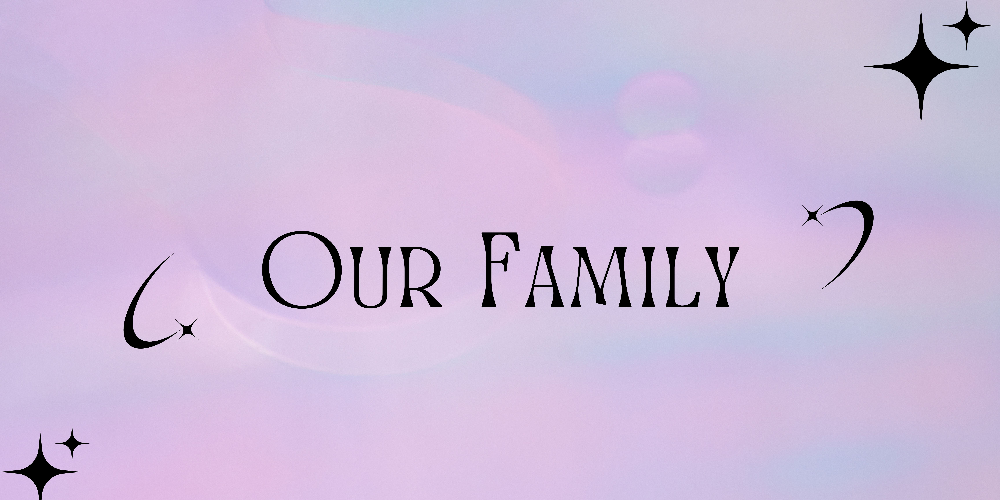

Who Are Epiphany's Parents?
Paragrah about Robert and I, our relationship and our fertility journey
Robert and Clarissa


Our Parenting Goals
Paragraph about how we plan to parent piffy

Paragrah about Robert and I, our relationship and our fertility journey
Paragraph about how we plan to parent piffy